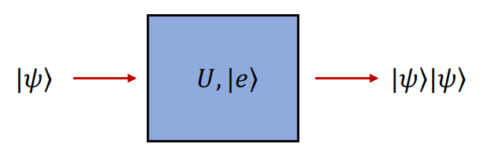

量子力学基本假设
假设一：量子系统的状态由希尔伯特空间 H 内的矢量 ∣ψ⟩ 描述，其演化由薛定谔方程描述
iℏdtd∣ψ⟩=H^∣ψ⟩
假设二：可观测量 A 由希尔伯特空间 H 内的算符 A^ 描述，其测量结果为 A^ 的本征值。希尔伯特空间内的任意态 ∣ψ⟩ 都可以由 ∣an⟩ 线性叠加得到
∣ψ⟩=n∑cn∣an⟩
观测到的结果为 A^ 的本征值 an，对应的概率为
P(an)=∣⟨an∣ψ⟩∣2=∣cn∣2
多次测量的平均值为
⟨A^⟩=⟨ψ∣A^∣ψ⟩=n∑∣cn∣2an
假设三：对于一个系统的态 ∣ψ⟩，如果在测量 A^ 后得到本征值 an，则系统的态会发生坍缩，变为对应的本征态 ∣an⟩。
投影测量=波包塌缩=波函数约化
直积空间：两个希尔伯特空间 H1 和 H2 的维数分别为 n1 和 n2；态矢分别为 ∣ψi⟩∈H1 和 ∣ψi⟩∈H2，i=1,2…；A^i 和 B^i 分别是 H1 和 H2 上的线性算符。则它们的直积空间为
H=H1⊗H2 dim=n1n2
直积态 ∣ψi⟩⊗∣ϕj⟩≡∣ψi⟩∣ϕj⟩ 为 H 内的矢量，直积空间中的内积和算符作用满足
(⟨ψi∣⟨ϕj∣)(∣ψi′⟩∣ϕj′⟩)=(⟨ψi∣ψi′)(⟨ϕj∣ϕj′⟩)
(A^⊗B^)(∣ψi⟩∣ϕj⟩)=(A^∣ψi⟩)⊗(B^∣ϕj⟩)
直积态在整体希尔伯特空间内态矢的内积就相当于，每个希尔伯特子空间内的态矢做内积再相乘
量子测量
哥本哈根学派对量子力学的诠释包含两个过程
-
幺正的量子态演化：量子态 ∣ψ⟩ 随时间演化遵循薛定谔方程
iℏdtd∣ψ⟩=H^∣ψ⟩
-
非幺正的量子测量：当对量子系统进行测量时，量子态会发生波包坍缩（无法用薛定谔方程描述，量子力学不完备的根源）。
冯诺依曼测量理论：在被测系统与仪器发生相互作用后，系统状态会变成纠缠态（幺正过程）。由于仪器是宏观的，它的坍缩会引发被测系统的“坍缩”。也可由以下两个过程描述：
1.幺正过程：系统与测量仪器发生相互作用后，形成纠缠态。若 S 和 D 分别为系统和仪器的状态，则有
U∣Sk⟩⊗∣D⟩=∣Sk⟩⊗∣Dk⟩
其中 U 是一个测量操作，使得原本无相互作用的系统和仪器发生耦合，形成纠缠态。整个系统的状态变化为
∣ψi⟩=直积态(k∑ck∣Sk⟩)⊗∣D⟩U∣ψf⟩=U∣ψi⟩=纠缠态k∑ck∣Sk⟩⊗∣Dk⟩
2.非幺正过程：仪器的波包坍缩
∣ψf⟩=k∑ck∣Sk⟩⊗∣Dk⟩坍缩∣Sk⟩⊗∣Dk⟩
我们可以从测量仪器的状态 ∣Dk⟩ 来读取系统的状态 ∣Sk⟩。
冯诺依曼测量的局限性：仍然存在一个非幺正过程，无法用薛定谔方程描述
完美测量：从仪器状态 ∣Dk⟩ 可以唯一地读取系统状态 ∣Sk⟩，那么需要以下条件：
- 测量不能对系统产生扰动
- 仪器态和系统态一一对应
我们总有 ⟨ψi∣ψi⟩=⟨ψf∣ψf⟩，展开得到
⟨Sk∣Sk′⟩(1−⟨Dk∣Dk′⟩)=0
因此被测态必须满足 ⟨Sk∣Sk′⟩=δkk′，才能实现确定性测量。
量子测量和退相干
波包坍缩：如果对 A^ 进行一次测量后的得到结果是 an，则第二次测量会得到相同的结果。
坍缩本质上就是一个退相干过程，即本来处于叠加态的 ∣ψ⟩，变成了某个单独的本征态 ∣an⟩，丧失了相干性，我们称为退相干。这在密度矩阵上体现得尤为直观
ρ=∣ψ⟩⟨ψ∣=n,m∑cncm∗∣an⟩⟨am∣
测量后，密度矩阵变为
ρM=n∑∣cn∣2∣an⟩⟨an∣
密度矩阵的对角元表示系统处于某个本征态的概率，非对角元表示不同本征态之间的相干性。测量后，非对角元变为零，系统丧失了相干性。
杨氏双缝干射实验就是一个典型的退相干过程。电子通过双缝后，波函数变为
∣ψ⟩=21(∣ψ1⟩+∣ψ2⟩)
密度矩阵为
ρ=∣ψ⟩⟨ψ∣=21(∣ψ1⟩⟨ψ1∣+∣ψ2⟩⟨ψ2∣+∣ψ1⟩⟨ψ2∣+∣ψ2⟩⟨ψ1∣)
其中 ∣ψ1⟩ 和 ∣ψ2⟩ 分别表示电子通过左缝和右缝的波函数。密度矩阵的非对角元 ∣ψ1⟩⟨ψ2∣ 和 ∣ψ2⟩⟨ψ1∣ 代表了两条路径之间的相干性。当我们不对电子进行测量时，这些非对角元存在，电子在屏幕上形成干涉条纹。
然而，如果我们在双缝处放置一个测量装置，试图确定电子通过哪一条缝，那么测量过程会引入退相干效应。测量后，密度矩阵变为
ρM=21(∣ψ1⟩⟨ψ1∣+∣ψ2⟩⟨ψ2∣)
非对角元消失，电子丧失了两条路径之间的相干性，屏幕上不再出现干涉条纹，而是形成两条独立的亮斑。
对于一个系综，对 A^ 的二次测量同样给出相同的结果。由于大量量子态副本的平均值等同于对系综的测量，且有
⟨A^⟩=Tr(ρA^)=Tr(ρMA^)
这表明，测量（退相干）与否不改变系综的一个算符 A^ 的平均值。我们还可以看到，测量后的密度矩阵 ρM 已经由一个纯态密度矩阵变成了混态密度矩阵，同时量子概率转变为经典概率。
ρ=∣ψ⟩⟨ψ∣=n,m∑cncm∗∣an⟩⟨am∣测量ρM=n∑∣cn∣2∣an⟩⟨an∣
Stern-Gerlach 实验
Stern-Gerlach 实验中，原子自旋态为被测态，磁场梯度和空间条纹为测量仪器，薛定谔方程可写为
iℏ∂t∂∣S(t)⟩∣ψ(t)⟩=HS−G∣S(t)⟩∣ψ(t)⟩
其中 ∣S(t)⟩=c↑∣↑⟩+c↓∣↓⟩ 为待测系统； ∣ψ(t)⟩ 为空间波函数，起到仪器的作用。
现在我们讨论为什么要强调 Stern-Gerlach 装置的非匀强磁场。假设磁场是匀强的，则哈密顿量为
HS−G=2mp^2−gσ^⋅B
薛定谔方程变为
iℏ∂t∂∣S(t)⟩∣ψ(t)⟩=(2mp^2−gσ^⋅B)∣S(t)⟩∣ψ(t)⟩
若磁场为匀强磁场，则哈密顿量中的 2mp^2 单独作用于波函数 ∣ψ(t)⟩，−gσ^⋅B 单独作用于自旋态 ∣S(t)⟩，因此系统的态矢仍然是一个直积态。只有当磁场为非匀强磁场时，哈密顿量为
HS−G=2mp^2−gσ^⋅B(r^)
此时自旋-磁场耦合项 −gσ^⋅B(r^) 同时作用于 ∣S(t)⟩ 和 ∣ψ(t)⟩，使得自旋态和空间波函数之间产生了纠缠，满足了测量的要求。 z 方向的波函数可以从整体空间波函数解耦出
∣ψ(r,t)⟩=⟨r∣ψ(t)⟩=⟨x∣ζ(t)⟩⟨z∣ϕ(t)⟩=∣ζ(x,t)⟩∣ϕ(z,t)⟩
其中 ∣ζ(x,t)⟩ 为 x 方向的波函数，∣ϕ(z,t)⟩ 为 z 方向的波函数。由于磁场梯度在 z 方向上，因此我们只需考虑 z 方向的薛定谔方程
iℏ∂t∂ϕ↑(z,t)=(2mp^z2−g⋅B(0)−gz∂z∂B)ϕ↑(z,t)iℏ∂t∂ϕ↓(z,t)=(2mp^z2+g⋅B(0)+gz∂z∂B)ϕ↓(z,t)
式中泡利算符 σ^z 已经作用完毕，造成了两式中的符号差异，最终导致了波函数的空间分离，且磁场 B 的梯度应足够大，才能看到明显的分离条纹。
弱测量
考虑测量对系统产生微扰，A^ 为待测的可观测量，p^表示测量仪器与系统之间的相互作用算符，定义 g(t) 为系统和仪器的相互作用强度，则相互作用哈密顿量为
H=g(t)p^A^
定义弱耦合
γ=∫titfg(t)dt≪1
假设整体初态为 ∣ψi⟩∣ϕ⟩，其中 ∣ψi⟩ 为系统的初态，∣ϕ⟩ 为测量仪器的初态。经过弱测量后，整体态变为
∣ψi⟩∣ϕ⟩g(t)p^A^f∑∣ψf⟩∣ϕf⟩
系统态 ∣ψf⟩ 和测量仪器态 ∣ϕf⟩ 之间存在纠缠。若对系统进行后选择，也就是使用投影算符 Πf=∣ϕf⟩⟨ϕf∣，使整体纠缠态坍缩至某一直积态。使用时间演化算符对整体态进行演化并用 ∣ψf⟩ 做内积，就是测量后得到 ∣ψf⟩ 的概率
⟨ψf∣e−iHdt∣ψi⟩∣ϕ⟩=⟨ψf∣e−iγp^A^∣ψi⟩∣ϕ⟩=⟨ψf∣(1−iγp^A^)∣ψi⟩∣ϕ⟩=⟨ψf∣ψi⟩(1−iγAwp^)∣ϕ⟩≈⟨ψf∣ψi⟩e−iγAwp^∣ϕ⟩
式中 Aw 称为可观测量 A^ 的弱值
Aw=⟨ψf∣ψi⟩⟨ψf∣A^∣ψi⟩
测量后，相当于 e−iγAwp^ 作用在测量仪器的初态 ∣ϕ⟩ 上。若测量仪器的初态为 ∣ϕ⟩，则有
e−iγAwp^∣ϕ⟩=∫−∞+∞dx∣x⟩∣x+γAw⟩∣ϕ⟩
假设初态高斯波包的中心位置处为 0
⟨x∣ϕ⟩=ϕ(x)=(2πσ2)1/41e−x2/4σ2
测量后，波包中心位移了 γAw，即
ϕ(x)→⟨x+γAw∣ϕ⟩=ϕ(x+γAw)=(2πσ2)1/41e−(x+γAw)2/4σ2
我们称算符 e−iγAwp^ 就是一个平移算符。也就是说，Aw 越大，测量仪器的波包位移越大，测量结果越明显，使得弱测量能有更精确的读出，因此 弱值 Aw 是弱测量的一个重要参数。若是末态和初态的内积 ⟨ψf∣ψi⟩ 近似正交，也就是趋近于零，则弱值 Aw 会变得非常大，这样通过弱相互作用，我们反而能得到放大的测量信号。
弱测量的核心思想是通过弱耦合和后选择，放大测量信号，从而在不显著扰动系统的情况下，提取有用的信息。相比于测量，弱测量更像是一种放大的手段。
广义量子测量
一组测量算符 {Mm} 作用在态矢 ∣ψi⟩ 上，得到测量结果 m 的概率为
p(m)=⟨ψi∣Mm†Mm∣ψi⟩
测量后，系统态变为
∣ψf⟩=⟨ψi∣Mm†Mm∣ψi⟩Mm∣ψi⟩
测量算符需满足完备性关系
m∑Mm†Mm=I⇒m∑⟨ψi∣Mm†Mm∣ψi⟩=m∑p(m)=1
- Mm 不一定是厄米算符
- 根据Neumark’s theorem，广义量子测量可以通过幺正变换和更大的希尔伯特空间内的投影测量来实现。
投影测量就是一种最简单的广义量子测量：将任意态用一组正交完备基展开 ∣ψi⟩=∑mcm∣m⟩，并定义投影算符 Mm=∣m⟩⟨m∣，则测量结果为 m 的概率为
p(m)=⟨ψi∣Mm†Mm∣ψi⟩=⟨ψi∣Mm∣ψi⟩=∣cm∣2
投影测量要求基矢为正交完备基，投影算符是厄米算符
下面介绍另一种广义量子测量：POVM（Positive Operator-Valued Measure，正定算符值测量）。POVM 由一组正定算符 {Fm} 组成，满足完备性关系
Fm=Mm†Mm,m∑Fm=I
测量后被测态被投影至投影态 ∣Mm⟩ 的概率为
p(m)=⟨ψi∣Fm∣ψi⟩=⟨ψi∣Mm†Mm∣ψi⟩
可在一定程度上区分非正交态。
量子不可克隆定理
假设存在一个量子克隆机 U，由于我们要得到一个确定性的结果，那么 U 须是幺正算符（若是投影测量则不确定），任意态 ∣ψ⟩ 都能被克隆为两份 ∣ψ⟩∣ψ⟩，即

U∣ψ⟩∣e⟩=∣ψ⟩∣ψ⟩
其中 ∣e⟩ 为初始态。考虑两个不同的态 ∣ψ1⟩ 和 ∣ψ2⟩，则有
U∣ψ1⟩A∣e⟩B=eiα(ψ1,e)∣ψ1⟩A∣ψ1⟩B
U∣ψ2⟩A∣e⟩B=eiα(ψ2,e)∣ψ2⟩A∣ψ2⟩B
下标 AB 表示原始态和被复制的态，对两式做内积得到
⟨ψ2∣ψ1⟩=⟨ψ2∣ψ1⟩2
解得 ⟨ψ2∣ψ1⟩=0 或 1，即 ∣ψ1⟩ 和 ∣ψ2⟩ 必须是正交态或相同态，才能被克隆。
- 量子不可克隆定理说明了，无法构造一个通用的量子克隆机来复制任意未知的量子态。
- CNOT 门可以克隆两个正交态 ∣0⟩ 和 ∣1⟩，但无法克隆任意态 ∣ψ⟩=α∣0⟩+β∣1⟩。
- 可以通过牺牲克隆的确定性，来实现两个任意态之间的概率性克隆。